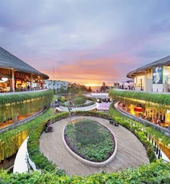

Madeira
Visited in May 2026
I loved the mountain views and quiet coastal towns. My favorite part was walking near the ocean in the evening.
OpenDon't choose a destination. Discover your match.
YOUR STORY
Keep small notes about the places you visited, what you liked, and how each trip felt to you.
+ Add New Memory
Visited in May 2026
I loved the mountain views and quiet coastal towns. My favorite part was walking near the ocean in the evening.
Open
Visited in August 2025
This trip felt calm and colorful. I enjoyed the temples, local food and slower pace of the island.
OpenVisited in March 2025
Tokyo was busy but exciting. I liked how modern areas and traditional places felt completely different.
OpenA quick summary based on my own notes and ratings.
| Place | Best memory | Rating | Overall impression |
|---|---|---|---|
| Madeira | Ocean and mountain views | 5 / 5 | Peaceful, active and very scenic |
| Bali | Temples and local food | 4 / 5 | Relaxing, warm and culturally interesting |
| Tokyo | Food and different neighborhoods | 5 / 5 | Fast, exciting and full of variety |